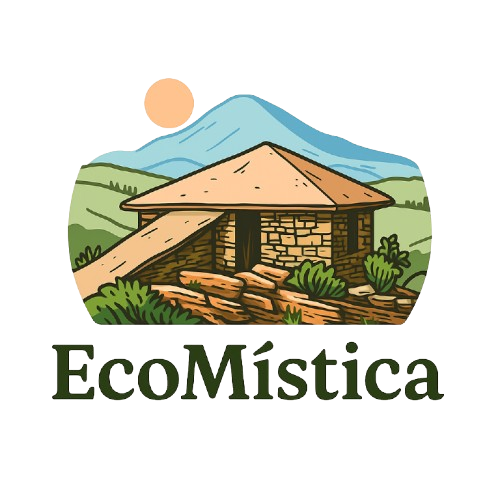

Entre montanhas de quartzito, grutas misteriosas e cachoeiras encantadoras, São Thomé das Letras é um dos destinos mais singulares de Minas Gerais. Reconhecida por sua energia mística e por ser um ponto de encontro entre natureza, espiritualidade e cultura, a cidade atrai visitantes de todo o Brasil e do mundo em busca de paz, autoconhecimento e contato com o meio ambiente.
Mas, junto com toda essa magia, vem também um grande desafio: como equilibrar o crescimento do turismo com a preservação do patrimônio natural e cultural da cidade? É a partir dessa reflexão que nasce o projeto “São Thomé das Letras Inteligente”, uma iniciativa que busca unir tradição, tecnologia e sustentabilidade em um mesmo espaço.
Neste site, você encontrará um mapa interativo com os principais pontos turísticos e místicos da cidade, informações sobre comércios locais, guias turísticos, rotas sustentáveis e boas práticas ambientais. O objetivo é valorizar o comércio e os profissionais da região, incentivando o turismo consciente e o consumo responsável, fortalecendo assim a economia local.
Além disso, o projeto apresenta uma análise dos impactos ambientais provocados pelo turismo, como o acúmulo de lixo, a degradação de trilhas e cachoeiras, e o uso indevido dos recursos naturais. A proposta é transformar esses desafios em oportunidades, mostrando caminhos possíveis para uma São Thomé das Letras mais inteligente, conectada e ecológica, onde tecnologia e consciência ambiental caminham juntas.
Inspirada no conceito de Cidades Inteligentes, esta iniciativa propõe o uso de ferramentas digitais e de educação ambiental para promover um turismo mais organizado, sustentável e participativo. A ideia é criar uma cidade que cresce de forma equilibrada, respeitando sua identidade cultural e espiritual, enquanto se adapta aos desafios modernos com inovação e sensibilidade.
Descubra São Thomé das Letras sob uma nova perspectiva: uma cidade que vibra energia positiva, protege sua natureza e evolui com inteligência. 🌱✨